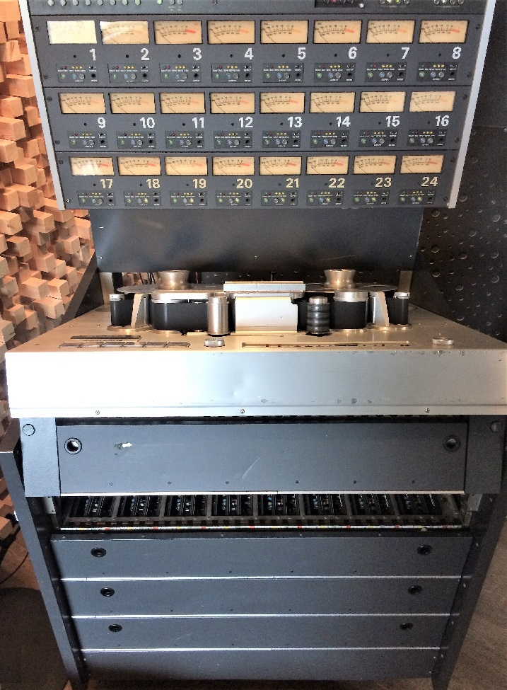
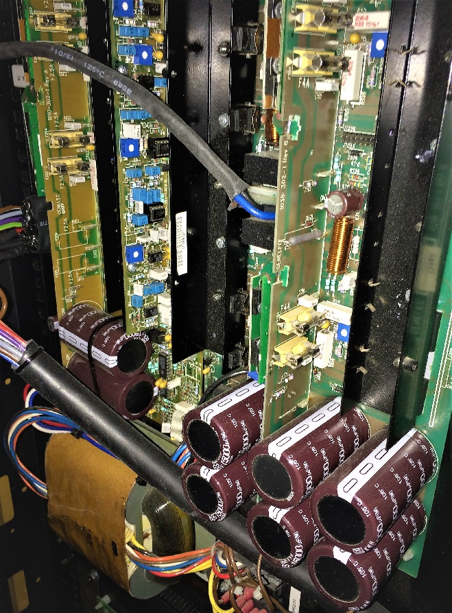
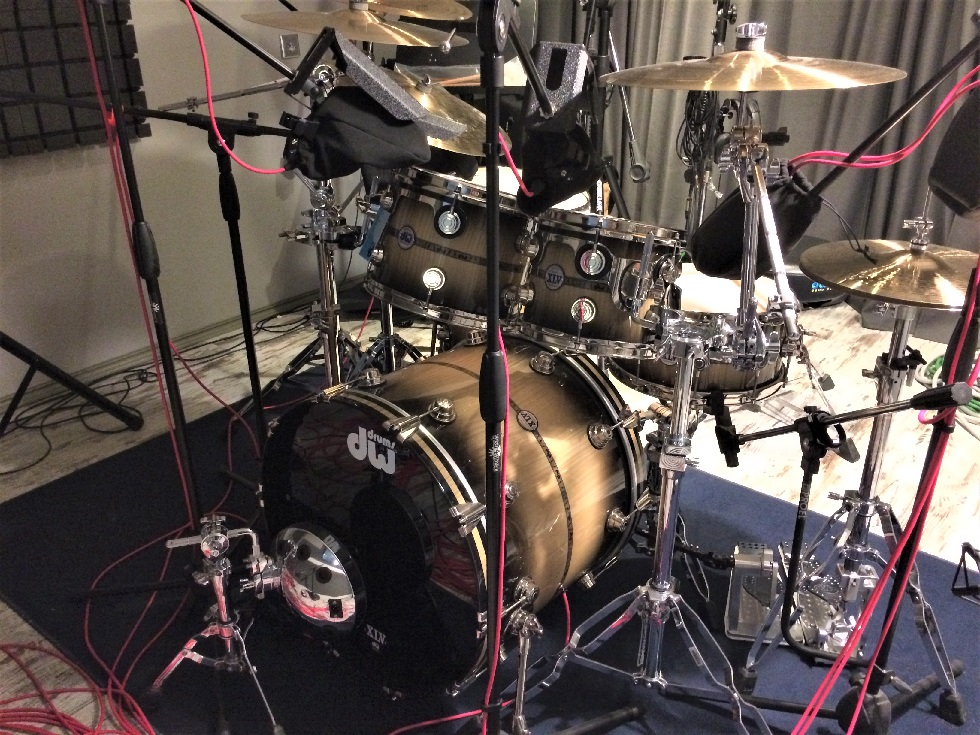

Studer A800 restoration
It’s no secret that Studer is the top manufacturer of tape recorders in the pro audio industry. We tear this beautiful Studer A800 2" tape machine completely down to the frame and re-assembling everything like the power supplies, transport and audio boards.
Watch

Class AB Amplifier Recap
Renewing and recapping Class AB Amplifier to be ready for a professional Dolby Atmos® installation.
Watch

Setting Up a Drum Room
We installed the exquisite DW Collector's Exotic Stradivarius 45th Anniversary Shell Pack number 92 out of 145 DW Kits Made from Stradivarius Spruce wood.
Watch